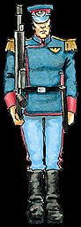

Imperial Forces |
Force Disposition Introduction |
Ork Forces |
|
 After a lengthy and difficult pacification of the T'arq system, the Mordian Iron Guard have arrived on Armageddon below strength and tired after several months of bitter fighting. The Mordians would rather die than show signs of weariness in front of a superior officer, however, and the six regiments stationed at Death Mire have galvanised the into a force to be reckoned with. The Mordians possess perhaps the most rigid and disciplined command structure of all the Imperial Guard, rivalling that of even the most stentorian chapters of the Adeptus Astartes. Every military action they undertake is by the book. Grim, dour and unshakeable, these soldiers never give up, and would die to a man before they dishonoured the Imperium. It is exactly these quantities that makes the Mordians so suitable for defending Death Mire. The officers of the Iron Guard have one major attribute that enables them to triumph even over a foe who outnumbers them threefold: utter conviction. Whereas the Orks attacked in howling waves of frenzied warriors, the Mordians struck decisively with surgical precision. Where the Orks ran whooping through the streets, burning and destroying, the Mordians silently sprung traps that culminated in the extermination of hundreds of Orks. While the Ork troops argued and fought among themselves to determine who was Boss, the Mordians unquestioningly obeyed every order to the letter. It is this faith in their superiors that enabled the Mordians to plan elaborate and brilliant tactical maneuvers, ruthlessly driving back incursion after incursion of Ork invaders. |
| ||||||||||||||||||||||||||||||||||||||||||||||||||
|
Although the defence of the Hive has cost merely six thousand lives so far, as the Iron Guard march relentlessly through the outer reaches of Death Mire eradicating Ork forces wherever they find them, the worst was yet to come. Surging up from the Equatorial Jungle, a vile tide of feral aliens was headed directly toward the Hive. When the intelligence of this disasterous development reached the General Darcus Heiss of the Mordian High Command, he saw only one course of action. The Storm Lords, currently fighting against horrific odds in the Imperial defence lines stationed around Death Mire, were unable to spare even a single squad of Space Marines. The Elysian Drop Troops were being held in reserve for the rumoured assault of the Warlord Varga's Drop Legions. It was up to the Mordians to do what they could in defence of the Hive, and that meant using the materials available, however shoddy. Over the next three days, all the Mordians that could be spared were sent into the undercity to recruit Hive Militia from the thousands of frightened citizens going to ground in the lower reaches of Death Mire. Various tactics were used to impress the urgency of the situation, not least of which was the pointblank shooting of particularly vocal dissenters. By the time they were finished the Iron Guard was roundly hated by the denizens of the underhive, and several did not report back for duty. However, the total conviction and natural leadership qualities of the Mordians worked wonders, and in the space of forty-eight hours a full twelve regiments of Hive Militia were mustered at the south side of Death Mire. Armed with everything from autopistols to heavy stubbers, the Militia were much better equipped than the savage hordes heading their way, and in galvanising the frightened populace of Death Mire into a large fighting force the Mordians may well have brought about the Hive's salvation for the time being. Mordians on Armageddon The Mordians possess exactly the qualities necessary in the face of the Ork incursions. Their rigid determination, iron discipline and utter refusal to give an inch of ground make them the perfect agents to defend a hive. Stationed at Death Mire, the Iron Guard have shown exceptional skill in repelling the invading Orks, using the alien's lust for battle to draw them into the teeth of the Iron Guard's guns. They have also mobilised several regiments of Hive Militia from the frightened rabble of the Hive's population, a combination of fear and natural authority galvanising the citizens into determined counterattacks. | |||||||||||||||||||||||||||||||||||||||||||||||||||